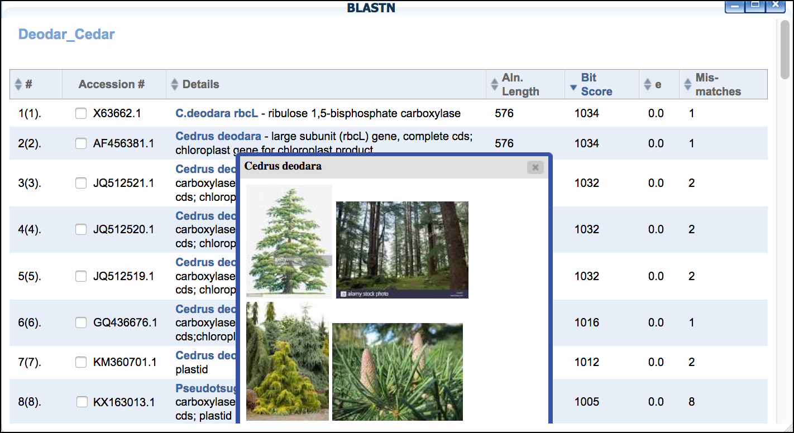
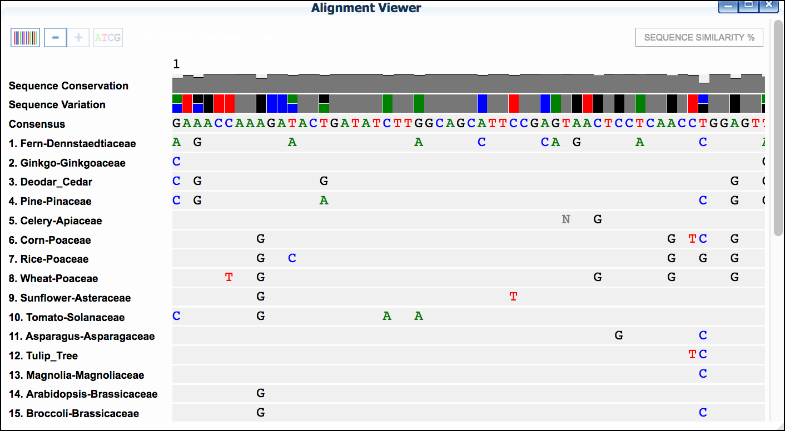
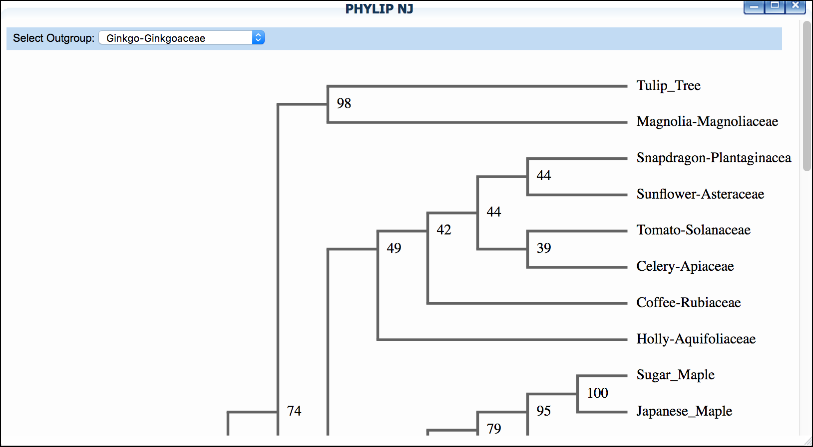
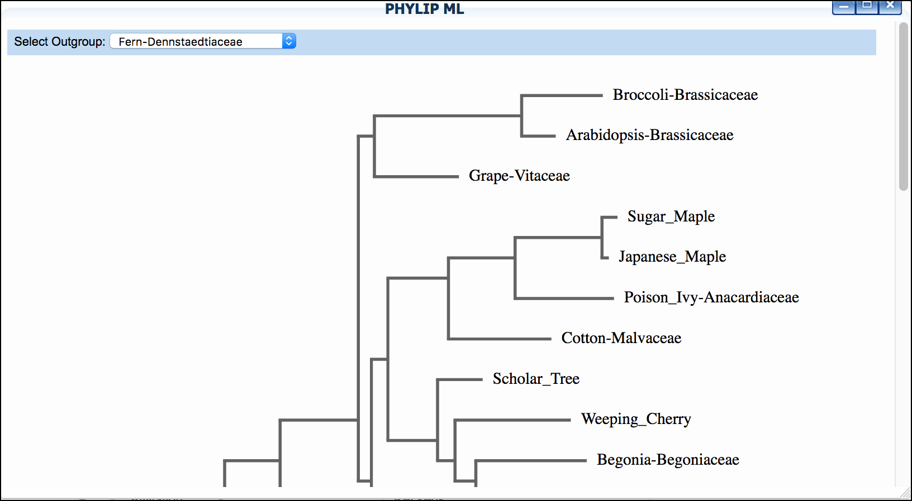

Walkthrough of DNA Subway Blue Line - DNA Barcoding and Phylogenetics¶
You can analyze relationships between DNA sequences by comparing them to a set of sequences you have compiled yourself, or by comparing your sequences to other that have been published in database such as GenBank (National Center for Biotechnology Information). Generating a phylogenetic tree from DNA sequences derived from related species can also allow you to draw inferences about how these species may be related. By sequencing variable sections of DNA (barcode regions) you can also use the Blue Line to help you identify an unknown species, or publish a DNA barcode for a species you have identified, but which is not represented in published databases like GenBank.
Some things to remember about the platform
- Wet lab protocols and other resources are available at http://dnabarcoding101.org/
- The DNA Barcoding 101 site also contains information on low-cost sequencing for U.S.-based educators.
Sample Data
How to use provided sample data
In this guide, we will use a mosquito dataset that includes DNA sequences isolated from mosquito larvae collected from Virginia's Shenandoah Valley ("Mosquito dataset"). There is a complete two-hour classroom bioinformatics lab with detailed instructions for instructors and students on QUBES hub here. Where appropriate, a note (in this orange colored background) in the instructions will indicate which options to select to make use of this provided dataset.
Sample data citation: Williams, J., Enke, R. A., Hyman, O., Lescak, E., Donovan, S. S., Tapprich, W., Ryder, E. F. (2018). Using DNA Subway to Analyze Sequence Relationships. (Version 2.0). QUBES Educational Resources. doi:10.25334/Q4J111
Video Course
Here is a video series on analyzing data with DNA Subway using the above mosquito dataset and lesson:
Tip
See a Course Source paper with protocols and recommendations for implementing a Barcoding CURE (course-based undergraduate research experience): CURE-all: Large Scale Implementation of Authentic DNA Barcoding Research into First-Year Biology Curriculum.
DNA Subway Blue Line - Create a Barcoding Project¶
- Log-in to DNA Subway - unregistered users may 'Enter as Guest'. !!! Note Only registered users submitting novel, high-quality sequences will be able to submit sequence to GenBank
-
Choose a project type:
- Phylogenetics: build phylogenetic trees from any DNA, protein, or mtDNA sequence)
- Barcoding: DNA Barcoding for plants (rbcL), animals (COI), bacteria (16S), and fungi (ITS).Sample Data
"Mosquito" dataset: Select COI.
3. Under 'Select Sequence Source' select a sequence buy uploading either a FASTA file or AB1 Sanger sequencing tracefile; pasting in a sequence in FASTA format, or selecting and importing a trace file from DNALC. If you do not have a file, you may select any of the available sample sequences.
Sample Data
"Mosquito" dataset: From Select a set of sample sequences select Intro to Barcoding Bioinformatics: Mosquitoes.
4. Name your project, and give a description if desired; click 'Continue.'
DNA Subway Blue Line - View and Clean Barcoding Sequence Data¶
A. View Sequencing Trace File
If you provided AB1 trace files, or imported files from DNALC, you will be able to view the sequence electropherogram.
- Click 'Sequence Viewer' to show a list of your sequences.
- Click on a sequence name to show the sequences' trace file.

B. Trim sequence, reverse complement and pair
By default, DNA Subway assumes that all reads are in the forward orientation, and displays an 'F' to the right of the sequence. If any sequence is not in that orientation, click the "F" to reverse compliment the sequence. The sequence will display an "R" to indicate the change.
- Click 'Sequence Trimmer.'
- Click 'Sequence Trimmer' again to examine to changes made in the sequence
- Click 'Pair Builder.'
-
Select the check boxes next to the sequences that represent bidirectional reads of the same sequence set. Alternatively Select the 'Auto Pair' function and verify the pairs generated.
Sample Data
"Mosquito" dataset: Click Try Auto Pairing. One pair of horsefly sequences and 4 pairs of mosquito sequences will be created. Finally, click
Save. -
As necessary, Reverse Compliment sequences that were sequenced in the reverse orientation by clicking the 'F' next to the sequence name. The 'F' will become an 'R' to indicate the sequence has been reverse complimented.
- Click
Saveto save the created pairs.
C. Build a consensus sequence This step remove poor quality areas at the 5' and/or 3' ends of the consensus sequence.
- Click on "Trim Consensus." Once the job is ready to view, click "Trim Consensus" again to view the results. Scroll left and right in the consensus editor window to identify what string of nucleotides from the consensus sequence you want to trim.
- Click on the last consensus sequence nucleotide that you want to trim. A red line will indicate what nucleotides will be removed from the consensus sequences.
-
Click
Trim. A new "Consensus Editor" window will pop up displaying the trimmed sequences.Sample Data
"Mosquito" dataset: All of the sequences in this dataset benefit from trimming. Follow the steps above to trim sequences. We recommending trimming at the first and last "grey" (lower quality) nucleotide on the right and left ends.
DNA Subway Blue Line - Find Matches with BLAST¶
DNA Subway Blue Line will search a local copy of a BLAST databases to check for published matches in GenBank.
Tip
At the end of the BLAST results page, you can see the latest update to the DNA Subway BLAST database.
- Click 'BLASTN' then click the 'BLAST' link to BLAST the sequence of interest. When the search is completed a 'View' link will appear.
- Examine the BLAST matches for candidate identification. Clicking the species name given in the BLAST hit will also give additional information/photos of the listed species.
-
If desired, select the check box next to any hit, and click
&Add BLAST hits to projectto add selected sequences to your project.
Sample Data
"Mosquito" dataset: We recommend performing a BLASTN search for all samples and saving the top 2 matches to your project for additional analysis (as in Step 3).
DNA Subway Blue Line - Add Reference Data¶
Depending on the project type you have created, you will have access to additional sequence data that may be of interest. For example, if you are doing a DNA barcoding project using the rbcL gene, samples of rbcL sequence from major plant groups (Angiosperms, Gymnosperms, etc.) will be provided. Choose any data set to add it to your analysis; you will be able to include or exclude individual sequences within the set in the next step.
- Click 'Reference Data.'
- Select sequences of your choice.
-
Click
Add ref datato add the data to your project.Sample Data
"Mosquito" dataset: Select Common insects and then click
&Add ref data.
DNA Subway Blue Line - Build a Multiple Sequence Alignment and Phylogenetic Tree¶
A. Build a multiple sequence alignment and phylogenetic tree
- Click 'Select Data.'
-
Select any and all sequences you wish to add to your tree.
Sample Data
"Mosquito" dataset: We suggest first adding your \"user data\" and building an alignment and tree. You can return to this step later to build additional trees. Once Selected, click
Save Selections. Follow the rest of the steps in this section and section B to create your tree. -
Click
Save Selectionsto select data - Click 'MUSCLE.' to run the MUSCLE program.
- Click 'MUSCLE' again to open the sequence alignment window. 
- Examine the alignment and then select the
Trim Alignmentbutton in the upper-left of the Alignment viewer'.
B. Build phylogenetic tree
-
Click 'PHYLIP NJ' and then click again to examine a neighbor-joining tree 
-
Click 'PHYLIP ML' and then click again to examine a maximum-likelihood tree 
Sample Data
"Mosquito" dataset: We suggest setting "horsefly" as outgroup for both trees.
Fix or improve this documentation
- Search for an answer: CyVerse Learning Center
- Ask us for help: click the Intercom icon
 on the lower right-hand side of the page
on the lower right-hand side of the page - Report an issue or submit a change: Github Repo
- Send feedback: learning@CyVerse.org